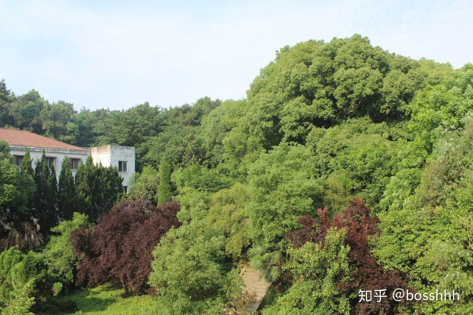
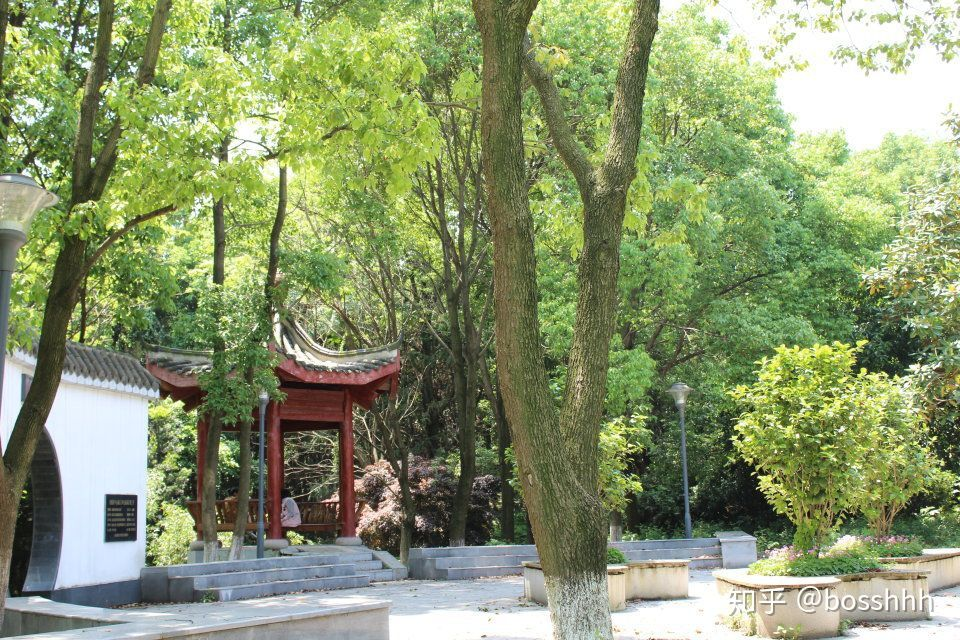
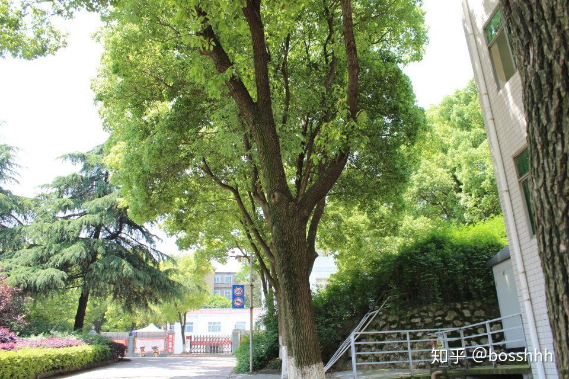

在一中就读是什么样的体验
在一中就读是什么样的体验
利益相关：某届名校班的zz，已毕业
（果然是一毕业就修食堂啊，但听说味道还是一样的啧啧）
怕丑，所以还是匿了吧。。
总的来说，松一中还是挺不错的，没读过荆州中学或沙市中学，都有同学在那，比较下来，松滋的教育真的是挺大进步的。
挺羡慕将要上高中的学弟学妹们了，因为我曾经以为漫长难熬的高中三年，也就这样真真切切的成为了过去式，就在结束的那一刻，所有的记忆片段和往事就突然变的历历在目却又遥不可及且陌生了。所以趁这个题目，也好好回忆一番吧。。
长文警告～～
高一的时候，前期可以说是比较轻松的，夏令营更是shen西（后悔中考考完就去了），不少同学玩了几天才来，晚上看电影，各种讲座，甚至还唱歌？！。
科任老师也各有特点，印象深刻的事情也很多，语文老师是特级老师，德高望重，从他夏令营作文讲座讲16年高考作文的时候，就让我印象深刻，作文的一句话至今记忆犹新，“我本能忍受黑暗，如果未曾见过光明”。不过他教完我们这届就去武汉了，为了照顾他的老伴，在此也感谢他的辛勤付出，而他教过我们的“尽志无悔，如履薄冰，如临深渊”的品质可能会使我们受益终生吧。为什么要提到张特了，因为你可能不会想到，因为春天的某一天还是一个节气的，他会放我们出去踏青？！然后我们在后山转了整整两节课，充分感受到了大自然的气息（狗头 ），其实是讲了半天的白。。

(后山)

(什么园忘了)
也会因为讲到《春江花月夜》这篇课文给我们放了一整节课的乐曲，而且不止一次，像啥《梁祝》《斯卡布罗集市》等，经常让我们闭着眼躺着听，这对某些同学来说，不就是正大光明地睡吗？比如那位班主任点名睡了三年的t同学。会给我们介绍“八卦”，讲希娜神话里的“阿喀琉斯之踵”，“达摩克利斯之剑”。最难以置信的是，在高三的三检考完后的晚自习又给我们放了一节课的MJ的歌，这具体原因我也不知道，听着倒怪带感的哈哈。
另外张特毕竟是张特（获得过首届冰心奖的作家咧），我们同学也靠着张特的人脉资源，或多或少都发表过几篇文章，领过稿费。像我这样文笔拙劣的人，都发表过3篇吧好像。在新年的时候他还会推荐我们看新年音乐会。现在毕业了，依然会提醒。
可能你会质疑我们的语文成绩，别的不说，就拿高考吧，我的语文反而帮了我一把，班上的语文成绩普遍都不错，全市单科第一也在我们班上。像高三后期疯狂的小题狂练，作文啥的，还有恐怖的“语文半小时”，可能是促进我们成绩提高的重要原因。
一句话，他是可遇不可求的好老师，哈哈你们没福了！！
介绍语文老师居然写了这么多，高中平时作文怎么半天挤不出一个字？
其它老师像化学老师，班主任，我们这届比较特殊，中途还换了一个。user最令我印象深刻的便是他自己说曾经获得过教改一等奖的实验—H2和Cl2遇光爆炸，当时效果满分啊，班里一同学提供了照相馆的闪光灯，一声巨响，把年级组的领导和对面一栋楼的同学全炸出来了，还以为发生了啥爆炸。
还有件事不得不提的便是遇到了十年难遇的大雪，给我们一节课的时间去打雪仗，qp校长在主席台上笑而不语哈哈。
而后来的老田，则是陪伴我们高三的老班，运动健将，工作狂人，也很厉害。高三的时候也会抽空给我们放新闻周刊或是开讲啦。或许是高三的拼搏经历，让我们的关系更加紧密？之后回来看老师，也只拜访了老田，emmm。或许人总是这样，来得早不如来得巧（扯远了
英语老师mommy Yi 哈哈
圣诞节还是啥节给我们买零食，拖堂怕我们没吃饱也会给我们买零食（吃货本人）。然后还有一周一次的查理日记了。英语学习很枯燥过程也需要付出，也很幸运能遇到易老师。
其它老师我就不赘述了，但不能忘了便是一口方言教学的老邓头，经典名言“啊～熟悉的老朋友又来了”“过河拆桥啊”以及最经典的“代入检验撒”，懂的自然懂，给我点赞吧哈哈。对了，我们高考数学考的更好，他还接受了采访。。
如果你初中够努力（没有你想象的那么难，不过听说会比珍阳班还是实验班多一分～），考进名校班的话，你就会发现这个班级会比你想像中的更奇妙，寒暑假我们虽然会补课，但是我们会变着法玩啊，每个大课间都踢足球，踢完了跟个水老鼠一样继续上课，甚至就在院子里踢球。暑假里看课外书的时候很多，之前老班也给我们安排了专门的阅读时间，教室的后面还有个图书角（后来被拆了）。你可以沉浸于《微微一笑很倾城》里面的甜甜爱情，也可以惋惜于《平凡的世界》田晓霞的逝去，或者在老师经过时，假装正经地读着《青春美文》(校园言情小说杂志)。而一天的学习当中，最令人轻松的时候一个是听着午觉铃之后的两首歌慢慢起来。我喜欢继续闭着眼躺着听第一首歌，然后慢慢起来听第二首歌。有时候一首悦耳好听的歌真的会让人顿时神清气爽，但是有时候放的不知道什么稀奇古怪的歌，又会让我感到一丝遗憾。
另外，身在名校班，你也可以得到竞赛辅导（亲测很水）的资源，qp校长数学辅导还不错，能和同学们积极的讨论问题，平时月假能比其它班少放半天甚至少放一天（乱入），会比其他班同学多刷很多套题，吃很多难以咽下的苦。而我想所有的这些为的就是也许能增加你高考获胜的概率 ，那也正是我们每一位高中学子的最终目标。

高中三年，应该不只一个人跟你说过，会是你最难忘的日子，会结实这辈子最好的朋友。这句话后者是对的，因为一起应战高考的同学真的是最最深厚的友谊，到大学也会经常联系，询问彼此的生活，回来聚会啊啥的。但这句话前半句是错的，至少对我来说是错的，因为在6月8号那晚过后，我对我所有经历过的一切都不再那么熟悉了，就像逐渐远去的记忆碎片，只是偶尔翻翻曾经的笔记，还有写给自己的一句话，会突然心头一震，微微一笑，笑那时还未成熟的自己，笑那个当时不知遇到什么挫折竟然会偷偷写励志的话来鼓励自己，笑那时我真真切切的为了一个目标全力以赴过，即使失败了。而最后也不过是合上书本，叹了口气，因为这样的时光真的再也不会重来了。哈，好像过分煽情了。。嘿嘿。
我只是想说再难熬的日子也会到头，再美好的时候也会头也不回的离我们而去。而高中仅是你平凡或不平凡人生中发着光芒的一隅。
高中很好，请别浪费。
还有别忘了点赞。略略略～